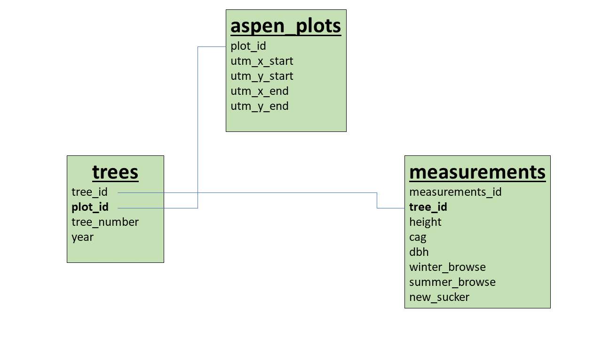

Chapter 2 Chapter 1: Creating My Project Databse Using SQLite

First, I need to load packages DBI and RSQLite. Then I need establish a connection to my database in R. This step will create the specified database if it does not exist.
library(DBI)
library(RSQLite)
ms_thesis_db <- dbConnect(RSQLite::SQLite(), "ms_thesis.db") 2.1 Create aspen_plot table
I need to first recreate the table in R to mirror my .csv file. This allows me to then populate the table with data from my .csv file. I have to specify the name of each column as well as data type and necessary constraints. The query at the end confirms that I have populated the table correctly.
dbExecute(ms_thesis_db, "CREATE TABLE aspen_plots (
plot_id integer PRIMARY KEY,
utm_x_start double,
utm_y_start double,
utm_x_end double,
utm_y_end double) ;")
aspen_plots <- read.csv("Aspen_Transect-GPS-Points_refined_final.csv", header = T)
dplyr::glimpse(aspen_plots)
dbWriteTable(ms_thesis_db, "aspen_plots", aspen_plots, append = TRUE)
dbGetQuery(ms_thesis_db, "SELECT * FROM aspen_plots LIMIT 10;") 2.2 Create trees table
Same process as the aspen_plot data, but this time I need to create and AUTOINCREMENT Primary Key. This is a simple process that is done by adding PRIMARY KEY AUTOINCREMENT to the tree_id column. This is necessary since I do not have a unique identifier in my trees table. To populate the table, I first need to add the tree_id column, then import the rest of the columns from my .csv.
dbExecute(ms_thesis_db, "CREATE TABLE trees (
tree_id INTEGER PRIMARY KEY AUTOINCREMENT,
tree_number integer NOT NULL,
plot_id integer NOT NULL,
year integer,
FOREIGN KEY (plot_id) REFERENCES aspen_plots(plot_id)
);")
trees <- read.csv("2022_aspen_data_suckers_tree.csv", header = TRUE)
trees$tree_id <- 1:nrow(trees)
dplyr::glimpse(trees)
library(dplyr)
trees <- select(trees, tree_id, tree_number, plot_id, year)
dbWriteTable(ms_thesis_db, "trees", trees, append = TRUE)
dbGetQuery(ms_thesis_db, "SELECT * FROM trees LIMIT 10;")2.3 Create measurements table
This is the same process as the trees table. I populated the tree_id column using the trees table. INSTER INTO was not working for me so I used a workaround that involved selecting the specific tree_id column from trees and using cbind to add it to the measurements table.
dbExecute(ms_thesis_db, "CREATE TABLE measurements (
measurement_id INTEGER PRIMARY KEY AUTOINCREMENT,
tree_id integer,
height float CHECK (height<=1000),
cag float CHECK (cag<=300),
dbh float CHECK (dbh <=20),
winter_browse integer CHECK (winter_browse <=1),
summer_browse integer CHECK (summer_browse <=1),
new_sucker integer CHECK (new_sucker <=1),
FOREIGN KEY (tree_id) REFERENCES trees (tree_id)
);")
measurements <- read.csv("2022_aspen_data_suckers_measurements_all.csv", header = TRUE)
tree_id<- dbGetQuery(conn = ms_thesis_db,
statement = "SELECT tree_id FROM trees;")
measurements <- cbind(measurements, tree_id)
measurements$measurement_id <- 1:nrow(measurements)
measurements <- select(measurements, measurement_id, tree_id, height, cag, dbh,winter_browse, summer_browse, new_sucker)
dbWriteTable(ms_thesis_db, "measurements", measurements, append = TRUE)
dbGetQuery(ms_thesis_db, "SELECT * FROM measurements LIMIT 10")This concludes the the first chapter of my Reproducible Data Science project book. My database is a simple one, but it that is because my data is straightforward.